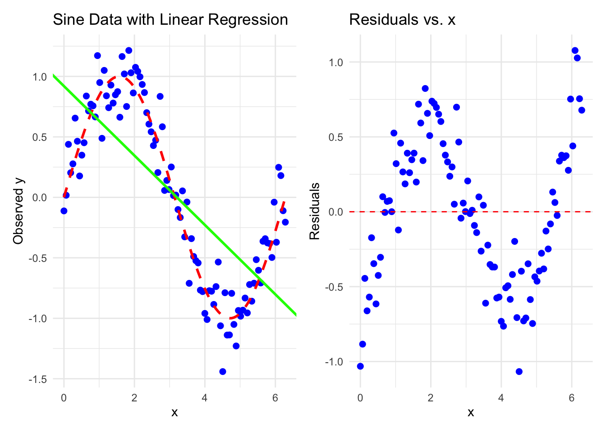
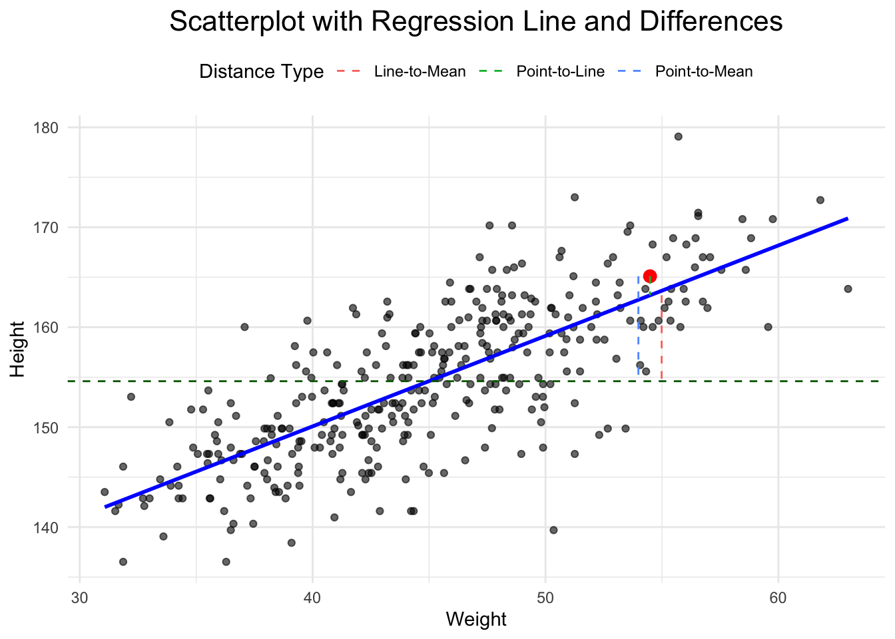
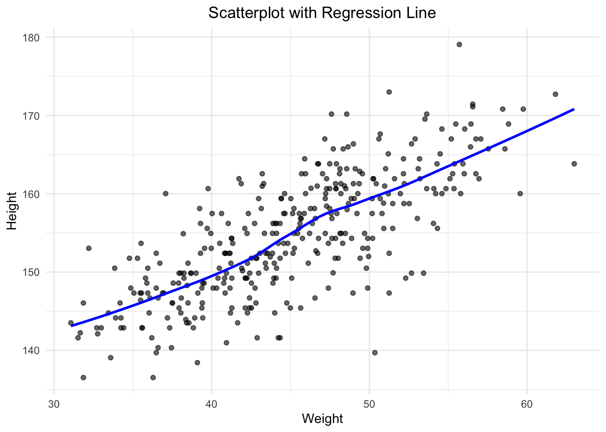
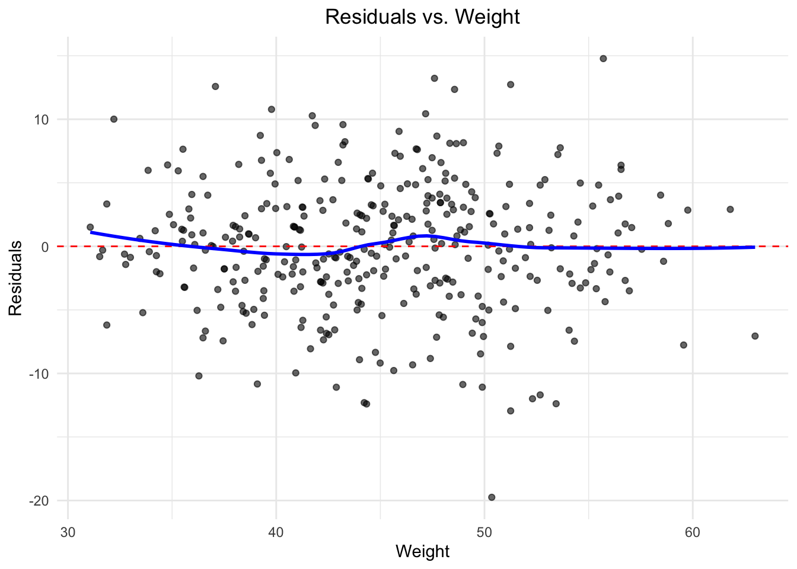
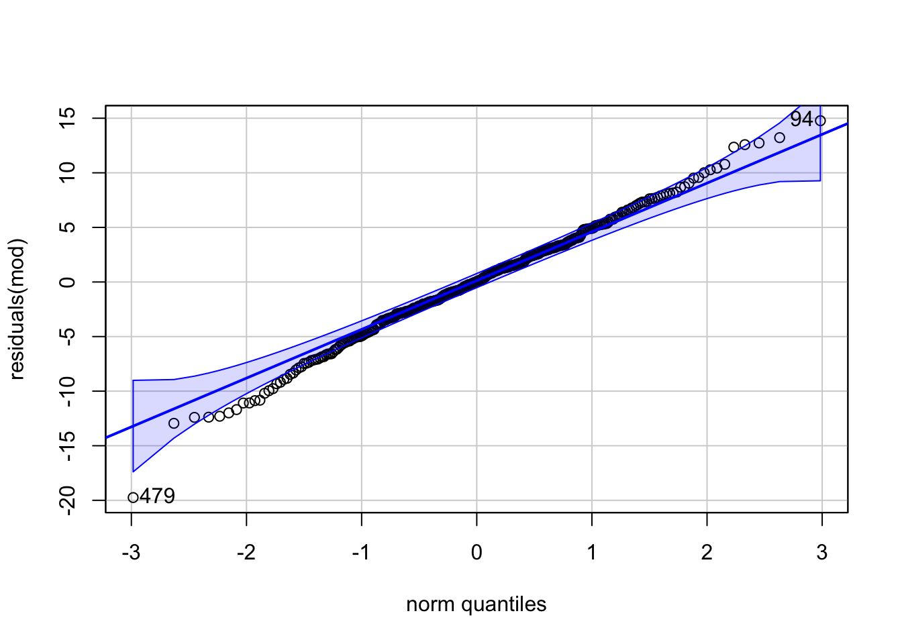
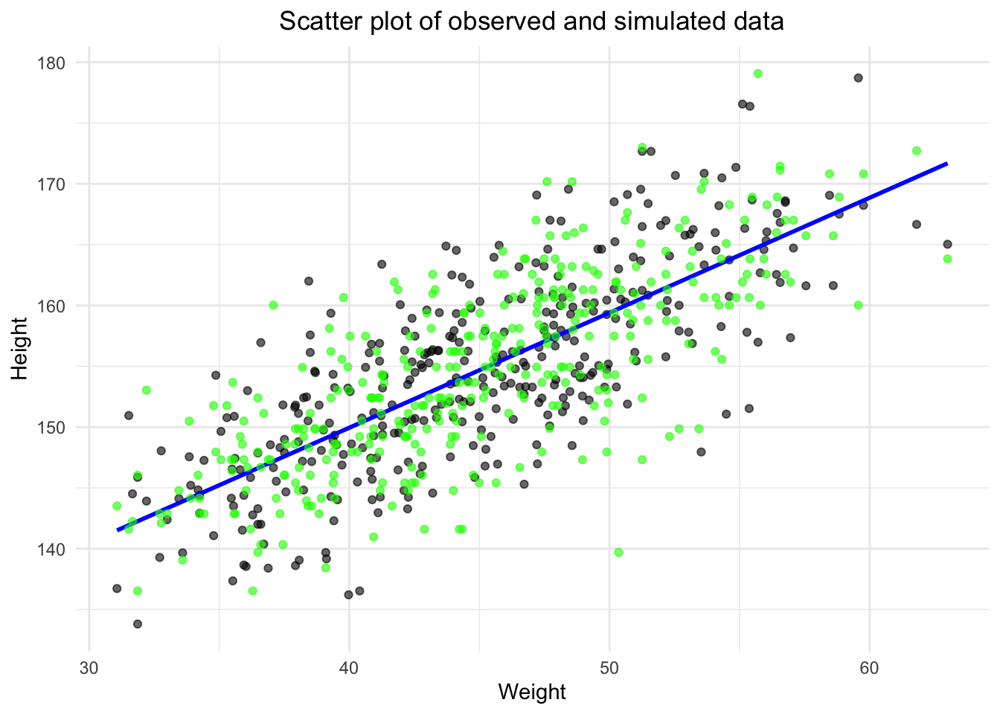
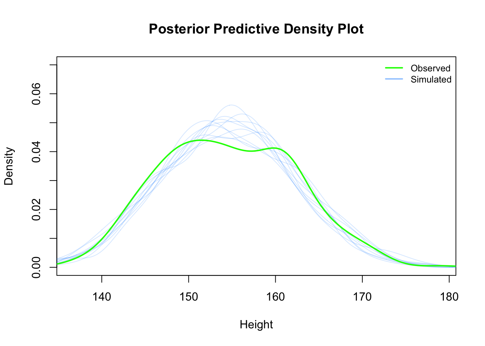

Chapter 3 Simple Linear Regression
3.1 Simple Linear Regression in the Bayesian Framework
You can watch this video as primer.
We will now add one covariate/explanatory variable to the model. Refer to Statistical Rethinking “4.4 Linear prediction” or “4.4 Adding a predictor” as it’s called in the online version of the book.
So far, our “regression” did not do much to be honest. The mean of a list of values was already calculated in the descriptive statistics section before and we have mentioned how great this statistic is as measure of location and where its weaknesses are.
Now, we want to model how body height and weight are related. Formally, one wants to predict body heights from body weights.
Here and in the frequentist framework, we will see that it is not the same problem (and therefore results in a different statistical model) to predict body weights from body heights or vice versa.
We remember the following:
- Regress \(Y\) on \(X\), which is equivalent to predict \(Y\) from \(X\). We know X and want to predict Y.
- Regress \(X\) on \(Y\), which is equivalent to predict \(X\) from \(Y\). We know Y and want to predict X.
The word “predictor” is important here. It is a technical term and describes a variable that we know (in our case weight) and with which we want to “guess as good as possible” the value of the dependent variable (in our case height). “As good as possible” means that we put a penalty on an error. The farer our prediction is aways from the true value (\(y_i\)), the higher the penalty. And not only that, but if you are twice as far away from the true value, you should be penalized four times as much. This is the idea behind the squared error loss function and the core of the least squares method. What if we would punish differently, you ask? There are many loss functions one could use (for instance the Huber loss), maybe we will see some later. For now, we punish quadratically.
We always visualize the data first to improve our understanding. First comes descriptive statistics, then one can think about modeling.

It’s not often that you see such a clean plot. The scatterplot indicates a linear relationship between the two variables. The higher the weight, the higher the height; with some deviations of course and we decide that normally distributed errors are a good idea. This relationsip is neither causal, nor deterministic.
- It is not causal since an increase in weight does not necessarily lead to an increase in height, especially in grown-ups.
- It is not deterministic since there are deviations from the line. It if was deterministic, we would not need statistical modeling.
For simpler notation, we will call d2$weight \(x\). \(\bar{x}\)
is the mean of \(x\).
3.1.1 Model definition
Let’s write down our model (again with the Swiss population prior mean):
\[\begin{eqnarray*} h_i &\sim& \text{Normal}(\mu_i, \sigma)\\ \mu_i &\sim& \alpha + \beta (x_i - \bar{x})\\ \alpha &\sim& \text{Normal}(171.1, 20)\\ \beta &\sim& \text{Normal}(0, 10)\\ \sigma &\sim& \text{Uniform}(0, 50) \end{eqnarray*}\]
Visualization of the model structure:
There are now additional lines for the priors of \(\alpha\) and \(\beta\) (compared to the simple mean model before). The model structure also shows the way to simulate from the prior. One starts at the top and ends up with the heights.
- \(h_i\) is the height of the \(i\)-th person and we assume it is normally distributed.
- \(\mu_i\) is the mean of the height of the \(i\)-th person and we assume it is linearly dependent on the difference \(x_i-\bar{x}\). Compared to the intercept model, a different mean is assumed for each person depending on his/her weight.
- \(\alpha\) is the intercept and we use the same prior as before.
- \(\beta\) is the slope of the line and we use the normal distribution as prior for it, hence it can be positive or negative and how plausible each value is, is determined by that specific normal distribution. Note, that we could easily adapt the distribtion to any distribution we like.
- The prior for \(\sigma\) is unchanged.
- \(x_i - \bar{x}\) is the deviation of the weight from the mean weight, thereby we center the weight variable. This is a common practice in regression analysis. A value \(x_i - \bar{x} > 0\) implies that the person is heavier than the average.
The linear model is quite popular in applied statistics and one reason is probably the rather straightforward interpretation of the coefficients: A one unit increase in weight is on average (in the mean) associated with a \(\beta\) unit increase/decrease (depending if \(\beta\) is \(>0\) or \(<0\)) in height.
3.1.2 Priors
We want to plot our prior predictions to get a feeling what the model would predict without seeing the data. This is a kind of “sanity check” to see if the priors and the model definition are reasonable. Again, we just draw from the assumed distributions for \(\alpha\) and \(\beta\) 100 times and draw the corresponding lines. Just as the model definition says.
set.seed(2971)
N <- 100 # 100 lines
a <- rnorm(N, 171.1, 20)
b <- rnorm(N, 0, 10)
xbar <- mean(d2$weight)
# start with empty plot
plot(NULL, xlim = range(d2$weight), ylim = c(-100, 400),
xlab = "weight", ylab = "height")
abline(h = 0, lty = 2) # horizontal line at 0
abline(h = 272, lty = 1, lwd = 0.5) # horizontal line at 272
mtext("b ~ dnorm(0, 10)")
# Overlay the 100 lines
for (i in 1:N) {
curve(a[i] + b[i] * (x - xbar),
from = min(d2$weight), to = max(d2$weight),
add = TRUE, col = col.alpha("black", 0.2))
}This linear relationship defined with the chosen priors seems rather non-restrictive. According to our priors, one could see very steeply rising or falling relationships between weight and expected heights. We could at least make the priors for the slope (\(\beta\)) non-negative. One possibility to do this is to use a log-normal distribution for the prior of \(\beta\) which can only take non-negative values.
\[ \beta \sim \text{Log-Normal}(0, 1) \]
Lets plot the priors again.
set.seed(2971)
N <- 100 # 100 lines
a <- rnorm(N, 171.1, 20)
b <- rlnorm(N, 0, 1)
xbar <- mean(d2$weight)
plot(NULL, xlim = range(d2$weight), ylim = c(-100, 400),
xlab = "weight", ylab = "height")
abline(h = 0, lty = 2) # horizontal line at 0
abline(h = 272, lty = 1, lwd = 0.5) # horizontal line at 272
mtext("b ~ dlnorm(0, 1)")
# Overlay the 100 lines
for (i in 1:N) {
curve(a[i] + b[i] * (x - xbar),
from = min(d2$weight), to = max(d2$weight),
add = TRUE, col = col.alpha("black", 0.2))
}
This seems definitely more realistic. There is some sort of positive linear relationship between weight and expected height.
3.1.3 Fit model
Now, let’s estimate the posterior/fit the model as before:
# load data again, since it's a long way back
library(rethinking)
data(Howell1)
d <- Howell1
d2 <- d[d$age >= 18, ]
xbar <- mean(d2$weight)
# fit model
mod <- quap(
alist(
height ~ dnorm(mu, sigma),
mu <- a + b * (weight - xbar),
a ~ dnorm(171.1, 100),
b ~ dnorm(0, 10),
sigma ~ dunif(0, 50)
) ,
data = d2)Note that the model definition was now directly included in the quap function.
Let’s look at the marginal distributions of the parameters:
## mean sd 5.5% 94.5%
## a 154.5972120 0.27033045 154.1651717 155.0292523
## b 0.9050131 0.04192754 0.8380048 0.9720214
## sigma 5.0718673 0.19115323 4.7663675 5.3773671
Note, that the credible intervals in the plot of the coefficients are hardly noticable. The reason is that the intercept \(a\) is rather large, whereas \(b\) and sigma are comparativly small. The plot is scaled to the largest parameter.
We can improve this by centering the height variable as well. Or, we could standardize both weight and height. This would change the interpretation of the \(\beta\) parameter. It would then be the expected change in standard deviations when changing weight by one standard deviation. See exercise 12.
The analysis yields estimates for all our parameters of the model: \(\alpha\), \(\beta\) and \(\sigma\). The estimates are the mean of the posterior distribution.
See exercise 2.
Interpretation of \(\beta\): The mean of the posterior distribution of \(\beta\) is 0.9. A person with a weight of 1 kg more weight can be expected to be 0.9 cm taller. A 89% credible interval for this estimate is \([0.83, 0.97]\). We can be quite sure that the slope is positive (of course we designed it that way too via the prior).
It might also be interesting to inspect the variance-covariance matrix, respectively the correlation between the parameters as we did before in the intercept model. Remember, these are the correlations of parameters in the multivariate (because three paremeters simulatenously) posterior distribution.
## a b sigma
## 0.073078550 0.001757918 0.036539558## a b sigma
## a 1 0 0
## b 0 1 0
## sigma 0 0 1diag(vcov(mod))gives the variances of the parameters andcov2cor(vcov(mod))the correlations. As we can see the correlations are (near) zero. Compare to the graphical display of the model structure. There is no connection.
3.1.4 Result
Graphical end result of fitting the model: We plot the marginal posterior distributions of \(\alpha\) and \(\beta\), and also the raw data with the found regression line.
3.1.5 Credible bands
We could draw again and again from the posterior distribution
and calculate the means like above. Plotting the regression lines
with the respective parameters \(\alpha\), \(\beta\) would indicate
the variability of the estimates.
Note that we do not draw from the data (as one does in bootstrap resampling),
but from the posterior distribution.
The link function does this for us. It takes the posterior distribution We
have just fit, samples \(\alpha\) and \(\beta\) from it, calculates the mean and then
samples from this normal distribution for the mean at a given weight.
Refer to pages 98-106 in the current version of the book Statistical Rethinking
for all details.
# Define a sequence of weights for predictions
weight.seq <- seq(from = 25, to = 70, by = 1)
# Use the model to compute mu for each weight
mu <- link(mod, data = data.frame(weight = weight.seq))
str(mu)## num [1:1000, 1:46] 138 136 137 136 137 ...# Visualize the distribution of mu values
plot(height ~ weight, d2, type = "n") # Hide raw data with type = "n"
# Loop over samples and plot each mu value
for (i in 1:100) {
points(weight.seq, mu[i, ], pch = 16, col = col.alpha(rangi2, 0.1))
}
The link function fixes the weight at the values in weight.seq and
draws samples from the posterior distribution of the parameters. We will do
the analog thing in the frequentist framework.
We can also draw a nice shade for the regression line:
# Summarize the distribution of mu
mu.mean <- apply(mu, 2, mean)
mu.PI <- apply(mu, 2, PI, prob = 0.89)
plot(height ~ weight, d2, col = col.alpha(rangi2, 0.5))
lines(weight.seq, mu.mean)
shade(mu.PI, weight.seq)The function PI from the rethinking package calculates the 89% percentile interval
for the mean of the height at a certain weight. The apply function
apples this function to each columns (hence the 2) of the matrix mu.
As we can see, we are pretty sure about the mean of height which we wanted to model in the first place.
Mean modeling is one thing, individual prediction is another. Given a certain weight of a person, what is the height of the same person? The first line in the model definition (\(height_i \sim Normal(\mu_i, \sigma)\)) tells us that a person’s weight is distributed around the mean (which linearly depends on weight) and is not necessary the mean itself.
To get to an individual prediction, we need to consider the uncertainty
of the parameter estimation and the uncertainty from the Gaussian distribution
around the mean (at a certain weight). We do this with sim.
# Simulate heights from the posterior
sim.height <- sim(mod, data = list(weight = weight.seq))
str(sim.height)## num [1:1000, 1:46] 138 130 130 147 136 ...# Compute the 89% prediction interval for simulated heights
height.PI <- apply(sim.height, 2, PI, prob = 0.89)
# Plot the raw data
plot(height ~ weight, d2, col = col.alpha(rangi2, 0.5))
# Draw MAP (mean a posteriori) line
lines(weight.seq, mu.mean)
# Draw HPDI (highest posterior density interval) region for mu
shade(mu.PI, weight.seq)
# Draw PI (prediction interval) region for simulated heights
shade(height.PI, weight.seq)Here, the PI function is applied to the simulated heights and calculates the 89%
percentile interval for each weight.
The lighter and wider shaded region is where the model expects to find 89% of the heights of a person with a certain weight.
This part is sometimes a bit desillusioning when seen for the first time: Draw a horizontal line at 150 cm and see how many weights (according to the individual prediction) are compatible with this height. Weights from 30 to 50 kg are compatible with this height according to the 89% prediction interval:
The higher the credibility, the wider the interval, the wider the range of compatible weights. In our example, more than 60% of the weight-range are plausible to predict a height of 150 cm.
## [1] 0.6265362On the other hand: We did not model the relationship this way. We modeled height depending on weight and not the other way around. In the next chapter, we will regress weight on height (yes, this is the correct order) and see what changes.
3.1.6 Summary
- We have added a covariate (weight) to the simple mean model to predict height.
- We have centered the weight variable.
- We have defined and refined priors for the intercept and slope.
- We have estimated the posterior distribution of the parameters using quadratic approximation with
quap. - We have visualized the result.
- We have created credible bands for mean and individual predictions.
3.2 Simple Linear Regression in the Frequentist Framework
We will now do the same analysis in the frequentist framework while introducing some foundational theory along the way. I recommend reading the first couple of chapters from Westfall.
3.2.1 Model definition
Our linear model is defined as:
\[ h_i = \beta_0 + \beta_1 x_i + \varepsilon_i \]
where
- \(\varepsilon_i\) is the error term with \(\varepsilon_i \sim N(0, \sigma^2), \forall i\)
- \(\beta_0\) is the unknown but fixed intercept
- \(\beta_1\) is the unknown but fixed slope
3.2.1.1 Model Assumptions of the Classical Regression Model (Westfall, 1.7):
The first and most important assumption is that the data are produced
probabilistically, which is specifically stated as
\[ Y|X = x \sim p(y|x)\]
What does this mean?
- \(Y|X = x\) is the random variable Y conditional on X being equal to x, i.e. the distribution of \(Y\) if we know the value of \(X\) (in our example the weight in kg). This is a nice image of what is meant here.
- \(p(y|x)\) is the distribution of potentially observable \(Y\) given \(X = x\). In our case above this was the normal distribution with mean \(\mu_i\) and variance \(\sigma\).
{kind=link}
You can play with this shiny app to improve your understanding. It offers the option “Bedingte Verteilung anzeigen”.
One always thinks about the so-called data generating process (Westfall, 1.2). How did the data come about? There is a process behind it and this process is attempted to be modeled.
Further assumptions:
Correct functional specification: The conditional mean function \(f(x) = \mathbb{E}(Y|X=x)\). In the case of the linear model, the assumption is \(\mathbb{E}(Y|X=x) = \alpha + \beta x\). The expectation of \(Y\) (height) depends linearly on \(x\) (weight). This assumption is violated when the true relationship is not linear or the data at least suggest that it is not linear, like here.
The errors are homoscedastic (constant variance \(\sigma^2\)). This means the variances of all conditional distributions \(p(y|x)\) are constant (\(=\sigma^2\)). This assumption is (for instance) violated if points are spreading out more and more around the regression line, indicating that the errors are getting larger.
Normality. For the classical linear regression model all the conditional distributions \(p(y|x)\) are normal distributions. It could well be, that the errors are not nicely normally distributed around the regression line, for instance if we have a lot of outliers upwards and the distribution is skewed, like here (Figure 5.20).
The errors are independent of each other. The potentially observable \(\varepsilon_i = Y_i - f(\mathbf{x_i}, \mathbf{\beta})\) is uncorrelated with \(\varepsilon_j = Y_j - f(\mathbf{x_j}, \mathbf{\beta})\) for \(i \neq j\). This assumption is violated if the errors are correlated, here is an example: The true data comes from a sine curve and we estimate a linear model (green), which does not fit the data well (left plot). The residuals plot shows clear patterns (right plot) and indicates that the errors are correlated. Specifically, the errors around \(x=2\) and \(x=4\) are negatively correlated (see exercise 6).
{kind=link}
:max_bytes(150000):strip_icc():format(webp)/Heteroskedasticity22-ce5acc2acef6494d91935588b0599579.png){kind=link}
##
## Attaching package: 'patchwork'## The following object is masked from 'package:MASS':
##
## area
In the case above, the errors are not conditionally independent. If we condition on \(X=2\) and \(X=4.5\), the errors are correlated (\(r \sim -0.3\)), which they should not be.
These assumptions become clearer as we go along and should be checked for every model we fit. They are not connected, they can all be true or false. The question is not “Are the assumptions met?” since they never are exactly met. The question is how “badly” the assumptions are violated?
Remember, all models are wrong, but some are useful.
In full, the classical linear regression model can be written as:
\[ Y_i|X_i = x_i \sim_{independent} N(\beta_0 + \beta_1 x_{i1} + \dots \beta_k x_{ik},\sigma^2)\] for \(i = 1, \dots, n\).
3.2.2 Fit the model
Again, we fit the model using the least squares method. For a neat animated explanation, visit this video. There are literally hundreds of videos on the topic. Choose wisely. Not all are good. If in doubt, use our recommended books as reading materials. This is the most reliable source. A hint along the way: Be very sceptical if you ask GPT about information, although for this special case one has a good chance of getting a decent answer due to the vast amount of training data.
One has to minimize the sum of squared differences between the true heights and the model-predicted heights in order to find \(\beta_0\) and \(\beta_1\).
\[ SSE(\beta_0, \beta_1) = \sum_{i=1}^n (y_i - (\beta_0 + \beta_1 x_i))^2 \]
We omit the technical details (set derivative to zero and solve the system) and give the results for \(\beta_0\) and \(\beta_1\):
\[ \hat{\beta_0} = \bar{y} - (\hat{\beta_1} \bar{x}), \] \[ \hat{\beta_1} = \frac{\sum_{i=1}^n (x_i - \bar{x})(y_i - \bar{y})}{\sum_{i=1}^n (x_i - \bar{x})^2} = \frac{s_{x,y}}{s_x^2} = r_{xy} \frac{s_y}{s_x}. \]
where:
- \(r_{xy}\) is the sample correlation coefficient between \(x\) and \(y\)
- \(s_x\) and \(s_y\) are the uncorrected sample standard deviations of \(x\) and \(y\)
- \(s_x^2\) and \(s_{xy}\) are the sample variance and sample covariance, respectively
Interpretation of \(\hat{\beta}_0\) and \(\hat{\beta}_1\): see exercise 3.
Let’s use R again to solve the problem:
library(rethinking)
data(Howell1)
d <- Howell1
d2 <- d[d$age >= 18, ]
mod <- lm(height ~ weight, data = d2)
summary(mod)##
## Call:
## lm(formula = height ~ weight, data = d2)
##
## Residuals:
## Min 1Q Median 3Q Max
## -19.7464 -2.8835 0.0222 3.1424 14.7744
##
## Coefficients:
## Estimate Std. Error t value Pr(>|t|)
## (Intercept) 113.87939 1.91107 59.59 <2e-16 ***
## weight 0.90503 0.04205 21.52 <2e-16 ***
## ---
## Signif. codes: 0 '***' 0.001 '**' 0.01 '*' 0.05 '.' 0.1 ' ' 1
##
## Residual standard error: 5.086 on 350 degrees of freedom
## Multiple R-squared: 0.5696, Adjusted R-squared: 0.5684
## F-statistic: 463.3 on 1 and 350 DF, p-value: < 2.2e-16Interpretation of R-output:
Call: The model that was fitted.Residuals: \(r_i = height_i - \widehat{height}_i\). Differences between true heights and model-predicted heights.Coefficients: Estimated for \(\beta_0\) and \(\beta_1\). We call them \(\hat{\beta}_0\) and \(\hat{\beta}_1\).Estimate: The (least squares) estimated value of the coefficient.Std. Error: The standard error of the estimate.t value: The value of the \(t\)-statistic for the (Wald-) hypothesis test \(H_0: \beta_i = 0\).Pr(>|t|): The \(p\)-value of the hypothesis test.
Residual standard error: The estimate of \(\sigma\) which is also a model parameter (as in the Bayesian framework).Multiple R-squared: The proportion of the variance explained by the model (we will explain this below).Adjusted R-squared: A corrected version of the \(R^2\) which takes into account the number of predictors in the model.F-statistic: The value of the \(F\)-statistic for the hypothesis test: \(H_0: \beta_1 = \beta_2 = \dots = \beta_k = 0\). Note, the alternative hypotheses to this test is that any of the \(\beta_i\) is not zero. If that is the case, the model explains more than the mean model with just \(\beta_0\).
We could also solve the least squares problem graphically: We want to find the
values of \(\beta_0\) and \(\beta_1\) that minimize the sum of squared differences
which can be plotted as 3D function. Since the function is a sum of squared terms,
we should expected a paraboloid form.
All we have to do is to ask R which of
the coordinates (\(\beta_0\), \(\beta_1\)) minimizes the sum of squared errors. The result confirmes
the results from the lm function. The dot in red marks the spot
(Code is in the git repository):
—COMPILE CODE AT DEOPLOYMENT (takes a bit)—
3.2.3 Confidence Intervals of coefficients (frequentist)
You can get CI’s conveniently with the confint function:
## 2 % 98 %
## (Intercept) 109.939864 117.8189232
## weight 0.818351 0.9917072Remember, these are frequenetist confidence intervals.
If one repeats the experiment many times, the true but unknown value of the parameter will be in the interval in 96% of the cases
We can also use the simple bootstrap. The advantage of this technique is that we can basically always use it, no matter how compliated the estimator is. We do not need formulae. We simply
- create 1000 bootstrap samples,
- fit the model,
- store the coefficients.
- The 2% and 98% quantiles of the coefficients constitute the 96% bootstrap confidence interval.
set.seed(123)
n <- nrow(d2)
B <- 1000
boot_coefs <- matrix(NA, nrow = B, ncol = 2)
for (i in 1:B) {
boot_idx <- sample(1:n, replace = TRUE)
boot_mod <- lm(height ~ weight, data = d2[boot_idx, ])
boot_coefs[i, ] <- coef(boot_mod)
}
#head(boot_coefs)
t(apply(boot_coefs, 2, quantile, c(0.02, 0.98)))## 2% 98%
## [1,] 110.1862455 117.4516455
## [2,] 0.8229982 0.9859997The CIs are quite similar to the ones from the confint function.
In the Bayesian setting, we used the centered weight variable. Let’s to this here too for comparison and use 89% coverage probability.
d2$weight_centered <- d2$weight - mean(d2$weight)
mod_centered <- lm(height ~ weight_centered, data = d2)
#summary(mod_centered)
confint(mod_centered, level = 0.89)## 5.5 % 94.5 %
## (Intercept) 154.162715 155.0314698
## weight_centered 0.837658 0.9724002Compare with precis from the Bayesian model:
## mean sd 5.5% 94.5%
## a 154.5972131 0.27033041 154.165173 155.0292533
## b 0.9050133 0.04192753 0.838005 0.9720216
## sigma 5.0718667 0.19115317 4.766367 5.3773663We are glad to see that both analyses align really nicely.
3.2.4 ANOVA (Analysis of Variance)
A non-obvious and very useful finding is that the total variability (SST) in the data (our heights) can be decomposed (or analysed) into two parts:
- The variability explained by the model (the regression line): SSR
- The variability not explained by the model (the residuals): SSE
\[ \text{Sum of Squares in Total} = \text{Sum of Squares from Regression} + \text{Sum of Squared Errors} \]
\[ SST = SSR + SSE \]
\[ \sum_{i=1}^{n} (y_i - \bar{y})^2 = \sum_{i=1}^{n} (\hat{y}_i - \bar{y})^2 + \sum_{i=1}^{n} (y_i - \hat{y}_i)^2 \]
If you are interested in the details, check out this.
This video explains the concept nicely.
Let’s visualize our regression result:
## `geom_smooth()` using formula = 'y ~ x'
The blue dotted line is the distance from the mean to the point (total variance), the red dotted line is the distance from the mean to the regression line (explained variance) and the green dotted line is the distance from the regression line to the point (unexplained variance). We see that it adds up. I find this fact quite fascinating. One finds additivity by considering not determinisic values, but variances. Thank you Ronald Fisher.
See exercise 13.
3.2.5 \(R^2\) - Coefficient of Determination
\(R^2\) is the amount of variance explained by the model. You can also read Westfall 8.1.
As you can see above, the total variance (SST) of our outcome (height) can be decomposed into two parts: the variance explained by the model (SSR) and the variance not explained by the model (SSE).
Maybe the most intuitive definition of \(R^2\) is:
\[ R^2 = \frac{SSR}{SST} = \frac{SST - SSE}{SST} = 1 - \frac{SSE}{SST}\]
The value is between 0 and 1. The higher the value, the more variance is explained.
But be cautious. Depending on the context, a really high \(R^2\) is not
necessarily a good thing. With the data we are working with,
it could easily hint towards an error. If we are near 1,
all points in the simple linear regression model are on the line.
If we are near 0, the model does not explain much of the variance
and we would see “noise with no slope” in the scatterplot (exercise 4).
The normal \(R^2\) can be found in the R output under Multiple R-squared.
If you add a lot of variables to your regression model, you can get an \(R^2\) of 1. The \(R^2\) will never decrease when adding more variables. We will verify this when we have more than 2 explanatory variables. As a non-formal explanation for this: In the Sum of Squares Errors (SSE), if you add more covariates (\(\beta_2, \beta_3\)), you have more freedom to choose values that minimize the number that will be squared. Simple regression is just a special case of multiple (more than one predictor) regression with \(\beta_2=\beta_3=\dots=0\). Hence, you will definitely not be worse off with regards to SSE when using more covariates. A smaller SSE implies a larger SSR (sum constraint; SST remains constant) and hence a larger \(R^2\). If you have as many explanatory variables as data points, you can get an \(R^2\) of 1. This is overfitting at its “best” (which we want to avoid). You would just get a value for each data point by setting all other \(\beta_i\) to zero and \(\beta_i = \frac{y_i}{x_i}\). Since we want to find the unterlying process, we want to avoid this.
Although not perfect, one way to mitigate the influence of “too many” variables
on \(R^2\) is to use the adjusted \(R^2\), which an also be found in the R output (Adjusted R-squared).
3.2.5.1 Seperating property of regression due to \(R^2\):
Peter Westfall explains (in Figure 8.1 of the book) how \(R^2\) influences the separation of distributions in our simple regression model.
In our regression of height on weight (the order is correct, that’s how you say it), the \(R^2\) is \(0.5696\). The following plot shows how “well” (i.e. precise) one can predict height if we use the 10% and 90% quantile of the weights (x_low and x_high). In both, you see the conditional distribution of height given the weight \(X = x_{low}\) or \(X = x_{high}\). Scenario 1 is the original model, scenario 2 is the same data with added noise (in Y-direction), which reduces \(R^2\) to \(0.13\), much lower. In the right plot, the distributions have a large overlap and it is hard to distinguish between weights when seeing the height. With a very low \(R^2\), the height prediction does not really change and we could just as well use the mean model.

In the left plot, given \(X = x_{low}\) gives a a rather strongly shifted normal distribution of potentially observable heights for this weight compared to \(X=x_{high}\). We would have a lower missclassification error when trying to distinguish heights of very light and very heavy people in the sample just by seeing the height. You can think of an even more extreme separation of these distributions, which would happen, when \(R^2\) is very high or the true slope is much higher.
See also exercise 5.
An interesting way to look at \(R^2\) is the following: Given, that one person is in the 90% quantile of the weight, the other is in the 10% quantile. What is the probability that the height of the person in the 90% quantile is higher than the height of the other person? We could calculate this relatively easy using theorems about additivity of normal distributions. Since we are all about application, we simulate this:
library(rethinking)
data(Howell1)
d <- Howell1
d2 <- d[d$age >= 18, ]
# Simulate heights for the two quantiles
n_sims <- 10000
set.seed(123)
mod <- lm(height ~ weight, data = d2)
summary(mod)$r.squared## [1] 0.5696444## 10% 90%
## 36.48581 54.01997mean1 <- 113.8793936 + 0.9050291 * x_low_high[1]
mean2 <- 113.8793936 + 0.9050291 * x_low_high[2]
sd <- 5.086 # Standard deviation for both distributions
simulated_heights <- tibble(
# conditional normal distribution according to the model
low_heights = rnorm(n_sims, mean = mean1, sd = sd),
high_heights = rnorm(n_sims, mean = mean2, sd = sd)
)
# Calculate the probability that the height of the person in the 90% quantile is higher
# than the height of the person in the 10% quantile
simulated_heights %>%
mutate(higher_height = high_heights > low_heights) %>%
dplyr::summarise(mean(higher_height))## # A tibble: 1 × 1
## `mean(higher_height)`
## <dbl>
## 1 0.987In other words, we can be almost sure, that a person in the 90% quantile of the weight is taller than a person in the 10% quantile of the weight given this data set. See also exercise 11.
3.2.6 Check regression assumptions
Everytime we fit a model, we should check the assumptions above. We do this for different reasons (which will become clearer over the course). The assumptions are independent of each other. They can all be true or false or some can be true and some false (Wesftall, p.21). Chapter 4 in the book is dedicated to this topic. It is important to know that the assumptions are usually not met exactly. The question is how badly they are violated, not if they are violated. Furthermore, the asssumptions refer to the data generating process, not the data itself. Thus, the evaluation of the assumptions should involve subject matter knowledge.
\(p\)-values to evaluate model assumptions are not a good idea. To quote the American Statistical Association (ASA): “By itself, a \(p\)-value does not provide a good measure of evidence regarding a model or hypothesis.” Deicision-tree thinking might not be the best idea for statistical modeling.
We will not use hypothesis tests for assumptions, because
- They are never met exactly. You cannot “prove” them.
- With small sample sizes, the statistical power is often low.
- With large sample sizes, the smallest deviation will be “significant”.
We will follow the book (chapter 4, pages 99ff) and use graphical and simulation methods to check the assumptions. As guidance, we could check them in the following order:
- Linearity
- Constant variance
- Independence
- Normality
3.2.6.1 Linearity
First, we plot the data, as we did already above. We can add a a smoothing line to the raw data as well:
## `geom_smooth()` using formula = 'y ~ x'
It looks like this relationship is describable in a linear way. No apparent curvature or patches. A refined version of the scatterplot of the raw data is The residual scatter plot (\(x_i, e_i\)):
## `geom_smooth()` using formula = 'y ~ x'
Compared to the scatterplot above, the residuals plot magnifies possible curvature. The reason is that the range of residuals is smaller than the range of the heights.
In multiple regression, we will use the (\(\hat{y_i}, e_i\)) plot, which is
identical to the plot above in simple linear regression, but
very helpful in multiple regression.
You get the (\(\hat{y_i}, e_i\)) plot in R with plot(mod, which = 1).
3.2.6.2 Constant variance
This assumption means that the variance of the residuals is constant. If it is violated, the spread around a hypothetical regression line is not constant. We look at the residual scatter plot again:

Look for a changes in patterns of vertical variability. Note, that you often do not have as many data points near the end of the range of the predictor. Here are some examples of heteroskedasticity: 1, 2, 3. The above looks homoscedastic. If it was heteroskedastic, this is not a problem, we just have to model it differently (later).
{kind=link}
{kind=link}
As always, it is a good idea to study the variability of these plots using simulation (exercise 7).
Better for detecting heteroscedasticity is the (\(\hat{y_i}, |e_i|\)) plot with a smoothing line:
## 'data.frame': 544 obs. of 4 variables:
## $ height: num 152 140 137 157 145 ...
## $ weight: num 47.8 36.5 31.9 53 41.3 ...
## $ age : num 63 63 65 41 51 35 32 27 19 54 ...
## $ male : int 1 0 0 1 0 1 0 1 0 1 ...## `geom_smooth()` using formula = 'y ~ x'
This will probably not be a perfectly horizontal line, since there are less points at the end of the range of the predictor. For instance, There are less people with extreme weights in the data set.
3.2.6.4 Normality
This assumptions states that the conditional distribution \(Y|X=x\)
is a normal distribution. We do not look at the normality of \(Y\) itself,
since it is not a formal requirement, that \(Y\) is normally distributed.
We need to assess the normality of the residuals \[e_i = y_i - \hat{y}_i\]
I like doing this with a Q-Q plot
from the R package car (command qqPlot):
## Loading required package: carData##
## Attaching package: 'car'## The following object is masked from 'package:dplyr':
##
## recode## The following object is masked from 'package:purrr':
##
## some## The following object is masked from 'package:rethinking':
##
## logit## 479 94
## 317 72With the 97% confidence envelope, we can see if the residuals are consistent with coming from a normal distribution. We could again use simulation to see how the Q-Q Plot changes to get a better feeling (see exercise 9).
Another convenient way to check model assumptions (for a wide class of models)
is to use the check_model function from the performance package:

In this case, everything looks fine. Let’s go through the plots and explain them one by one:
3.2.6.4.1 Posterior predictive check (upper left)
Here, you create new data from the estimated model. We did that already in
the Bayesian framework using sim from the rethinking package.
You could also try the command extract.samples()from the rethinking package
(Statistical Rethinking p. 196) to create
new data from the Frequentist model. You can try this in our exercises sessions.
Using least squares, the estimated model was:
\[ height_i = 113.87939 + 0.90503 \cdot weight_i + Normal(0, 5.086) \]
From this model, we can simulate new data (or the original weights, if we want to use fixed X)
by plugging in different weights, and adding a random error from a normal distribution
with mean 0 and standard deviation 5.086.
Then, we can compare the distribution of the simulated data with the observed data.
The blue lines in the graph are model predicted heights, the green line are the
observed heights.
Let’s try to replicate this plot. First, we want to simulate new data from the model. A scatter plot is also a nice way to check of the model predictions are in line with the observed data. One could repeat this process multiple times to get a feeling for the variability of the model predictions.
## `geom_smooth()` using formula = 'y ~ x'The simulated and original data (green) fit nicely together. This lends some credibility to the model - at least in terms of prediction. And now the density plots of the model created data (blue) and the observed data (green):

As you can see, the densities of the observed and simulated data are broadly similar. One could argue that heights in the range of 150-160 cm are a bit overestimated by the model. Depending on the context, this might be a problem or not. Let’s accept the model for now.
3.2.6.4.2 Linear fit (upper right)
This is the same plot as above: \((\hat{y}_i, e_i)\).
3.2.6.4.3 Homogeneity of variance (middle left)
This is the same plot as above: \((\hat{y}_i, |e_i|)\).
3.2.6.4.4 Influential observations (middle right)
The standard method to check for influential observations is to compute the
so-called Cook’s distance.
This is a measure of how much leverage a single observation has on the model.
We can extract the Cook’s distance from the model using cooks.distance().
An ugly rule of thumb would be to look at observations with a Cook’s distance
greater than 1.
In the plot, the leverage \(h_{ii}\) is on the x-axis, and the standardized residuals
are on the y-axis. In short, a high leverage means that the estimated value \(\hat{y}_i\)
is potentially far away from the original value \(y_i\).
The contours (dotted green lines) are the Cook’s distance, in this
case at a Cook’s distance of 0.5.
There is formula
that relates the leverage (\(h_{ii}\)), the Cook’s distance
and the residuals. Holding Cook`s distant constant at 0.5,
gives you the green dotted line in the plot.
Let’s create an outlier and see what happens:

## `geom_smooth()` using formula = 'y ~ x'## Cook's distance = 7.025207One single outlier changes the diagnostic plots. Observation 352 is clearly identified as influential. The one point changes all diagnostic plots notably. The estimates of the regression coefficients are also affected:
## [1] "Original Model"## (Intercept) weight
## 113.8793936 0.9050291## [1] "Model with outlier"## (Intercept) weight
## 127.172494 0.599054Admitted, this is a somewhat artificial example.
3.2.6.4.5 Normality of residuals (lower left)
This is basically the same plot as above, just detrended. Let’s try to replicate it:
##
## Attaching package: 'qqplotr'## The following objects are masked from 'package:ggplot2':
##
## stat_qq_line, StatQqLine
The normality assumption seems to hold. Note that in the above QQ plot, we detrended the residuals and used a bootrap confidence band. Depending on the band type, the confidence band can be wider or narrower and include or exclude points.
After having checked the assumptions for the classical regression model
and we feel comfortable with the model, we get exact confidence intervals
for the effect sizes (\(\beta\)s) using confint() (p. 74 in Westfall).
Heureka! We have a model that fits the data well.
3.2.7 Bootstrap fit
In order to get a feeling for the variability of the model with regards to the predictors as well,
we can bootstrap the whole data set, fit the model and draw regression lines.
We create \(100\) bootrap replicates of our data set d2 by drawing with
replication. For every bootstrap replicate, we fit the model and draw the regression line.

The results is very stable. Neither intercept nor slope change much.
3.2.8 Regression towards the mean
There are great explanations for “regression towards the mean” in Gelman p.58 and Westfall p.36. This video might be interesting to watch.
It describes the phenomenon that the predicted value (y) is closer to its mean than the predictor (x) to its mean. In our case this means, if the weight of a person is 1 standard deviation above the mean of body weights, the (model-)predicted height is less than 1 standard deviation above the mean of body heights, but still larger than the average height. Let’s verify:
## predicted height= 0.7547479## `geom_smooth()` using formula = 'y ~ x'
As Gelman points out in his book (Figure 4.2), there is a fine detail: The regression line is not the line most people would draw through the data. They would draw a line through the main directions of variability (directions are the eigenvectors of the covariance matrix). In dotted green, you can see these directions. The regression line is a solution to another problem (as we have seen): It minimizes the sum of squared residuals, which are defined via the vertical distances to the line. See exercise 8.
3.2.9 Random X vs. fixed X
A detail that is not mentioned often in introductory statistics courses is the question of whether the predictor variable \(X\) is random or fixed. In our case, we did not specify the weights of the people in the !Kung San data set. Obervational data was collected and we have no control over the weights. In an experimental setting, we could have controlled the weights of the people. We could have for instance only included people with weights at certain steps (50 kg, 60 kg, 70 kg). In the latter case, we could consider X as fixed. In the former case, we consider X as random. If we would draw another sample from the population, we would get different weights again. Further reading: Westfall 1.5.
There are many more details we could look into, but we wanted to give a first practical introduction to regression analysis with less emphasis on theory and proofs behind it.
We want to make clear what the confidence intervals from confint of a model mean. For this see
exercise 14.
3.3 Exercises
[E] Easy, [M] Medium, [H] Hard
(Some) solutions to exercises can be found in the git-repo here.
3.3.1 [E] Exercise 1
In the model from above:
\[\begin{eqnarray*} h_i &\sim& \text{Normal}(\mu_i, \sigma)\\ \mu_i &\sim& \alpha + \beta (x_i - \bar{x})\\ \alpha &\sim& \text{Normal}(171.1, 20)\\ \beta &\sim& \text{Normal}(0, 10)\\ \sigma &\sim& \text{Uniform}(0, 50) \end{eqnarray*}\]
- What ist the expected height when \(x_i = \bar{x}\)?
- What is the expected height when \(x_i\) changes by 1 unit?
3.3.2 [E] Exercise 2
Look at the marginal distrubutions of the parameters in the Bayesian model.
- Plot the posterior distribution of all 3 parameters.
- Include in the plot a 99% credible interval (HDI).
3.3.3 [M] Exercise 3
Go to the coefficient estimates in the simple linear regression setting above (Fit the model) in the classical framework.
- Create an R file to simulate the simple linear regression model.
- Change your input parameters and see how the estimates change.
- Does this make sense with respect to the estimates given, specifically with respect to \(\beta_1\)?
3.3.5 [M] Exercise 5
Verify with simulation in R that the separation of the distributions in the simple linear regression model improves if the true (but usually unknown) slope increases.
3.3.6 [H] Exercise 6
Go to the model assumptions in the classical regression model (Model Assumptions). - Use the code from github to recreate the regression model with the sine-curve. - Check the independence assumption as described. Look at the residuals, when \(X=2\) and \(X=4.5\). You can get those by filtering residuals that are \(>0.5\) and \(<0.5\).
3.3.7 [M] Exercise 7
- Simulate data from the regression of heights on weights in our !Kung San data set.
- Draw the \(\hat{y_i}, e_i\) plot.
- Draw the \(\hat{y_i}, |e_i|\) plot.
- Repeat the simulation and look at the variability of the plot.
3.3.8 [E] Exercise 8
- Go to p.36 in Westfall’s book and read Appendix A.
- Pay close attention to the explanation about regression toward the mean.
3.3.9 [M] Exercise 9
Go to the resuials above where we tested the normality assumption.
- Calcuate mean and standard deviation from the residuals of the model that regresses height on weight.
- Simulate from a normal distribution using these parameters.
- Get a feeling how the QQ plot changes by drawing the QQ plot repeatedly.
3.3.10 [M] Exercise 10
Using our !Kung San data,
- show that the regression of height on weight (
lm(height ~ weight)) is not the same as the regression of weight on height (lm(weight ~ height)). - Draw both regression lines in one diagram.
- Can you simulate data where the two regressions deliver (almost) identical results?
- Explain why the results differ and what consequences this would have for a research question. Which question do I answer with each?
3.3.11 [E] Exercise 11
Go back to the section about \(R^2\) and the separation of the distributions. How would the probability that a person in the 90% quantile of the weight is taller than a person in the 10% quantile of the weight change if you change
- the true slope of the regression line
- the true \(\sigma\), i.e. if you add more noise and have a lower \(R^2\)?
3.3.12 [M] Exercise 12
Go back to the Bayesian simple regression model for height above.
- Standardize weights and heights in the data set
d2. - Estimate the regression model as we did in the section using
quap. - Plot the posterior distribution using
plot(model). - Interpret the regression coefficient \(\beta\).
3.3.13 [M] Exercise 13
Go back to the ANOVA section.
Calculate SSE, SST and SSR for the regression of height on weight.
How many degrees of freedom does each term have?
3.3.14 [M] Exercise 14
When we fit a simple linear regression model (Frequentist), we get confidence intervals for the coefficients
using the command confint. As stated previously, these are frequentist CIs. That means,
if we draw data from the true (but usually unknown) data generating process, we would expect
that the true value of the coefficient (intercept and slope) lies in the CI in X% of the cases.
- Simulate data from the true data generating process of the simple linear regression model.
- Fit the model and get the confidence intervals for the coefficients.
- Repeat this process 1000 times and see how many times the true value of the coefficients lies in the CI.
Changing the distribution of the covariate \(x\) should not change the results, since we only get a different amount of data points agross the range of \(x\).
- Verify this statement by changing the distribution of \(x\).